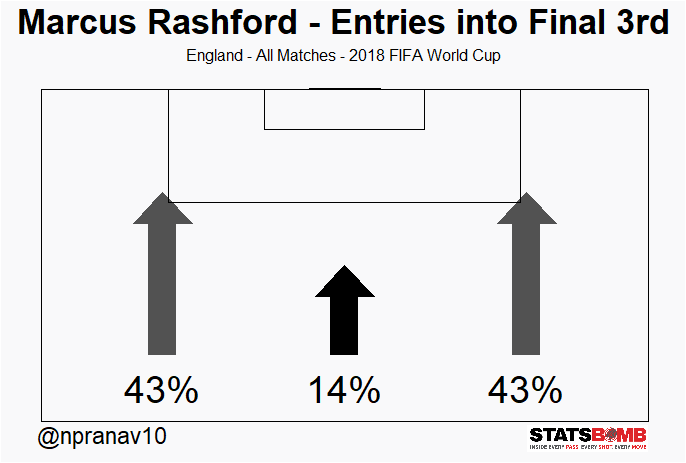

Sections in this page:
- Pre-Match Conference (Introduction)
- Breaking down the "Flank attacks"
- Match-Wise Analysis
- Team Analysis
- Player Analysis
- Interactive R Shiny Application
- Creating the viz using StatsBomb data
- Post-Match Conference (Inference)
- A lot of analysis has been done to study the quality of the opposing team in its attacking half / attacking final 3rd. The de-facto metrics used are touches, passes, take-ons all per zone stats and are eventually visualized as zonemaps [1] . Sometimes events like carries of a particular player are shown on a event map. [2]
- But on a different note, if we are able to figure out on which width of the attacking third, the team was most productive, it will be more easier to digest the required information specifically during match by match analysis, than looking at individual heatmaps or eventsmap.
- Hence, in this article we'll be looking to quantify a team's attacking prowess based on their "entries into final third" taking into account of the attempts of passes,carries,take-ons into each width of the attacking third ( i.e Left Wing, Center, Right Wing.) and their corresponding success percentage.
- This whole concept was inspired by Mark Thompson & his team's work on the same topic What is a Flank Attacks visualisation? and my work is a mere replica of theirs', besides encourging the readers to appreciate this viz and showing how to build such a viz using StatsBomb Open Data.
- Spoiler Alert : I am not a nerdy analyst (I like to be the farmer cultivating rice in a paddy field rather than be the end-user cooking it in a pressure cooker), but I am happy to test my analytical and explanotory skills here.
- One of the key take-aways from this article is that we can make use of the Flank attacks viz to summarise the team's attacking prowess.
- The other side of the coin - We must not limit ourselves to just using this particular viz. Instead we can use it as a filter to analyse large sets of matches, and then probably video analysts can select the intended matches according to their needs.
- Currently, the "entries" consider only passes, dribbles and take-ons with success % and depth in metres. In future we can fitler each event and add more info like pass angle and passes per sequence etc.
Pre-Match Conference:
Breaking down the "Flank attacks"
Imagine a toll collection area being place on the 66.6th percentile of pitch's length with 3 toll booths counting number of
ball entries crossing the border(66.6% mark) similar to counting vehicle movements crossing the toll booth. In a similar manner we
arrive at the numbers by counting passes and carries started before the border and ending after the border. Passes/Carries starting and
ending in the final 3rd are not counted for instance.
The following plot showcases Belgium's final 3rd entries in the 2018 FIFA World Cup Semi-Final vs France.
Belgium were active 60% of the time at their Right Wing and it was also their most succesful attacking zone in the final 3rd.
| Aspect | Corresponds To |
|---|---|
| Arrow Height | Avg Depth of all attempted entries |
| Arrow Color | Scale of the color represents the success % of the attempted entries. Darker is the best. |
| Numbers in % | Success Percentage of all attempted entries. |
Match Analysis:
Match Analysis (Match 1/3):
City Women's depth was consistent but failed to make more out of their entries in the Right Flank.
Everton Ladies' attempted more entries on the left but it had the least depth and success % among all 3 zones.
Match Analysis (Match 2/3):
England made use of their flanks 80% of the time, when they entered into final 3rd. This picture illustrated below (report from TotalFootballAnalysis) clealy supports the data.
Panama's picture tells exactly you what it is to play against a 3-5-2 setup. England's packed midfield did a good job in keeping Panama at bay.
Match Analysis (Match 3/3):
Morocco defenders preferring to initiate sequences on the flanks.
Hakim Ziyech and Achraf Hakimi had the best chemistry. Their linkups helped Morocco achieve more success on the LW. Though the RW group received the ball more often than LW yet they produced a output of lesser quality.
Team Analysis:

Player Analysis:
Player Analysis (1/2):
Let's take a look at the tournament perfomance of the World Cup Final's MOTM Antione Griezmann. On the whole he played
as a CAM for most of the matches, but shifted to Right Striker when France played 4-4-2 while defending. Hence the
account for high stats on the right.
Player Analysis (2/2):
Prior to the start of the World Cup, Rashford was nominated as a winger because Kane and Sterling were both
fixtures in the 2 man attack, due to their end-of-the-season PL form. It was seen that most often Rashford was substituted in
for Raheem Sterling as the Right stiker. But quiet interestingly he contributed equal amount on both the wings.

R Shiny Application:
I have also built a Shiny Application using which you can get to see the entries graph for all teams from StatsBomb's publicly available 799 matches. (P.S: The app runs out of memory in shinyapps.io and I ran out of free-tier in AWS. So I am working hard to bring it live to you.)
library(shiny)
# Use runGitHub to soft download the app and run it in your local computer.
shiny::runGitHub("entries-into-final-third", "npranav10")
Code:
Please register yourself and agree to the terms
before using StatsBomb data.
Code to plot flank attacks viz using StatsBomb data is available in this GitHub repository. This function besides plotting the data, also returns a dataframe. Let's examine what's in it.
| Metric | Value |
|---|---|
| att | Total Attempts |
| att_distribution_pct | Distribution of attempts according to zones |
| att_entry_depth | Average depth of all attempted entries |
| suc | Succesful attempts |
| suc_pct | Success % of entries. SuccessfulAttempts/TotalAttempts in each zone |
| suc_entry_depth | Average depth of all successful entries |
Post-Match Conference:
Also a shout-out to Mark Thompson for giving me a thumbsup to proceed with this concept which his team at Twenty3 sport initally tested on.